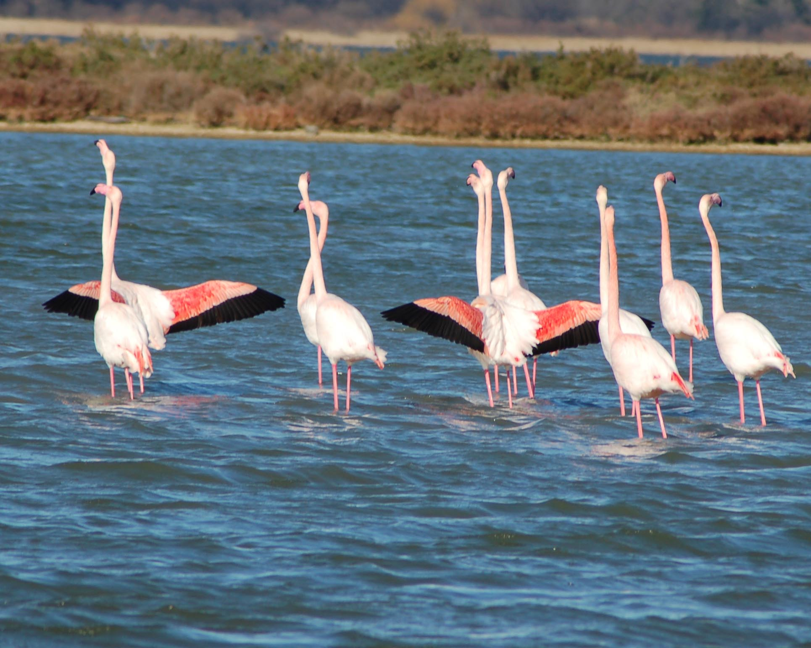

Les flamants roses de Camargue

Fiche du voisinage
- Espèce
- Flamant rose
- Lien avec le dahu
- Origine de son goût pour l'omelette
- Habitat
- Salins, bords des étangs
Fiche naturaliste · Camargue, Bouches-du-Rhône
Origine, habitat, mode de vie, alimentation, histoire et chasse d'un animal aussi discret que légendaire, observé entre le phare de Faraman et les salins de Beauduc.
